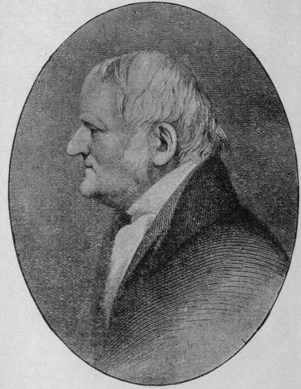

Dalton's Laws
Description
This section is from the book "Modern Chemistry", by William Ramsay. Also available from Amazon: Modern Chemistry: Theoretical and Modern Chemistry (Volume 2).
Dalton's Laws
The Law Of Definite Proportions
When two or more elemerts combine with each other to form a compound, thty combine in constant proportions by weight.
The Law Of Multiple Proportions
When two elements form more than one compound with each other, they combine in simple multiple proportions.
Thus, if A and B are definite weights of two elements, the proportions in which they combine will be A with B ; or A with 2B ; or A with 3B ; or 2A with B ; or 2A with 3B; or 3A with 2B, etc.
But Dalton not merely stated these facts ; he devised a theory with a view to explaining them ; he revived and gave definiteness to the ancient conception that all substances which we see around us consist of atoms. This idea is at least as ancient as 400 b.c, and is to be found in the writings of the Greek philosophers. The theory, in the form which Dalton gave it, is as follows : All compounds consist of atoms of elements united with each other. An atom is an indivisible (literally " uncuttable") particle, or, more correctly, a particle which resists division. Each atom has its own definite weight; but as there is no apparent means of determining this weight (for atoms are inconceivably small), we must be contented in determining their weights relatively to each other. This we can do by ascertaining the proportion in which they exist in their compounds. Thus, knowing that water consists of oxygen in combination with hydrogen, if the smallest particle of water consists of one atom of each element, the relative weights of the atoms will be found by discovering the proportions by weight in which these elements are combined with each other. Now, it is found that 8 parts by weight of oxygen and I part of hydrogen by weight combine to form 9 parts by weight of water ; hence an atom of oxygen is eight times as heavy as an atom of hydrogen; and an atom of water is nine times as heavy.
We must beware of confusing this theory with the facts on which it is founded; indeed, Dalton's contemporaries, while accepting the facts, refused in many cases to accept his theory. Sir Humphry Davy used the word " proportion" in place of the word "atom ; " and Dr. Wollaston preferred the word "equivalent." And even granting the existence of atoms, the problem of determining their relative weights is not so simple as would at first sight appear. For how is it possible to know which of several compounds is the one containing only one atom of each element ? The two compounds of carbon with hydrogen by means of which Dalton illustrated his law will furnish a good example of this difficulty. While one of them, marsh-gas, consists of one part by weight of hydrogen in combination with three parts of carbon, the other consists of one part of hydrogen, in union with six parts of carbon. Which of these two contains one atom of each element ? If the former, then the atom of carbon is three times as heavy as the atom of hydrogen ; if the latter, it is six times. Dalton was quite aware of this difficulty, but could devise no means of overcoming it, and the numbers which he adopted were only provisional.
The difficulty was solved chiefly by the experimental work of Joseph Louis Gay-Lussac, Professor of Chemistry in the Ecole Polytechnique in Paris, and by P. L. Dulong and T. A. Petit, Director of, and Professor in, the same school. The attention of Gay-Lussac having been directed by the celebrated explorer Humboldt to the fact that water is formed by the union of one volume of oxygen with two volumes of hydrogen gas, he followed it up by the discovery that other gases unite in very simple proportions by volume. Of this we shall see many instances hereafter.
John Dalton
Continue to: